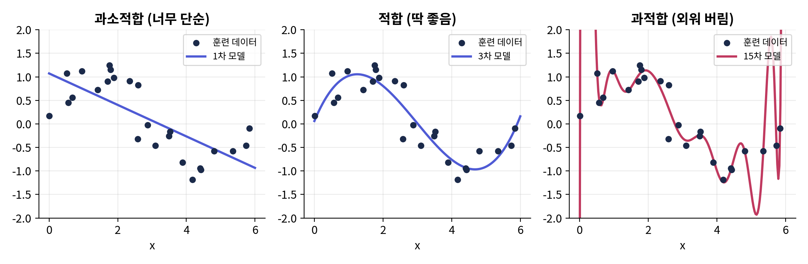
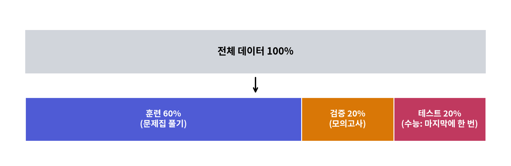
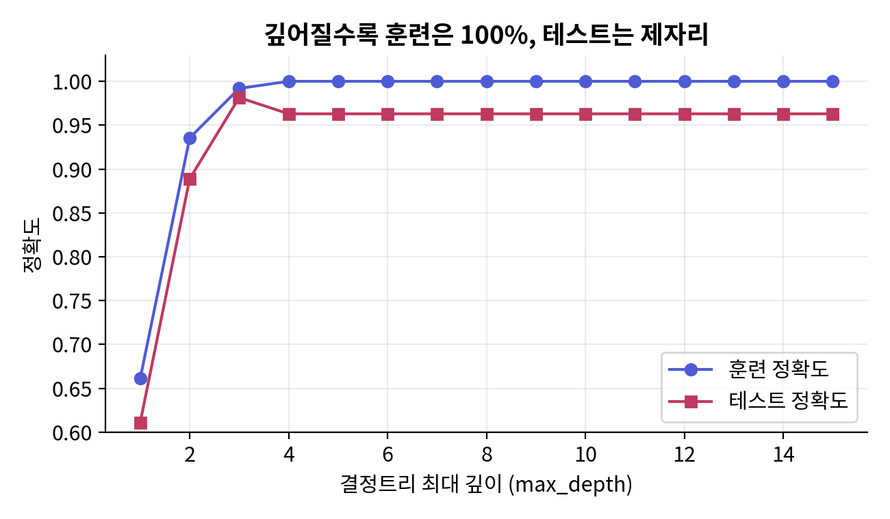
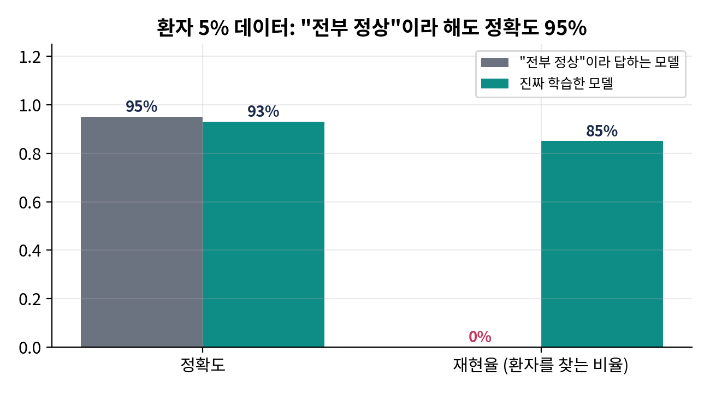
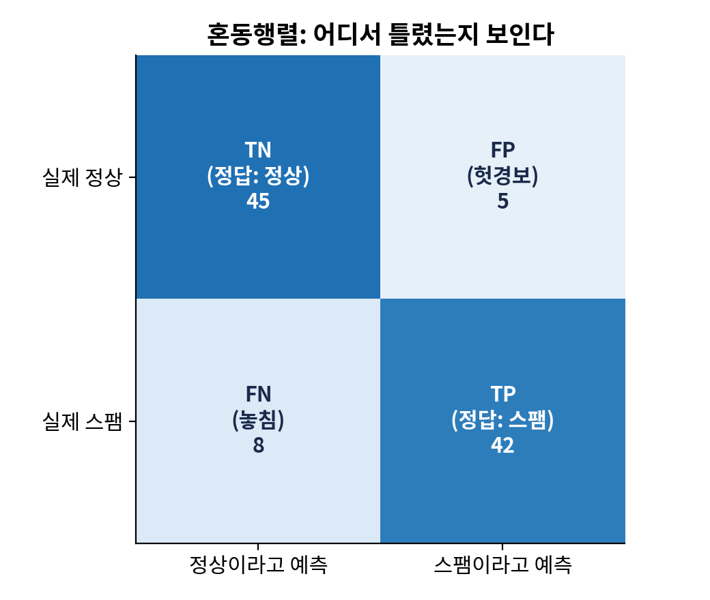
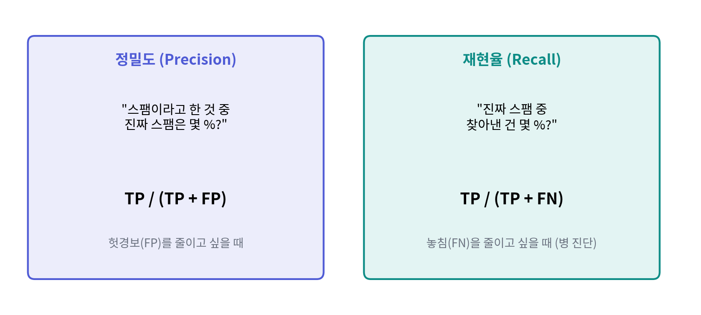
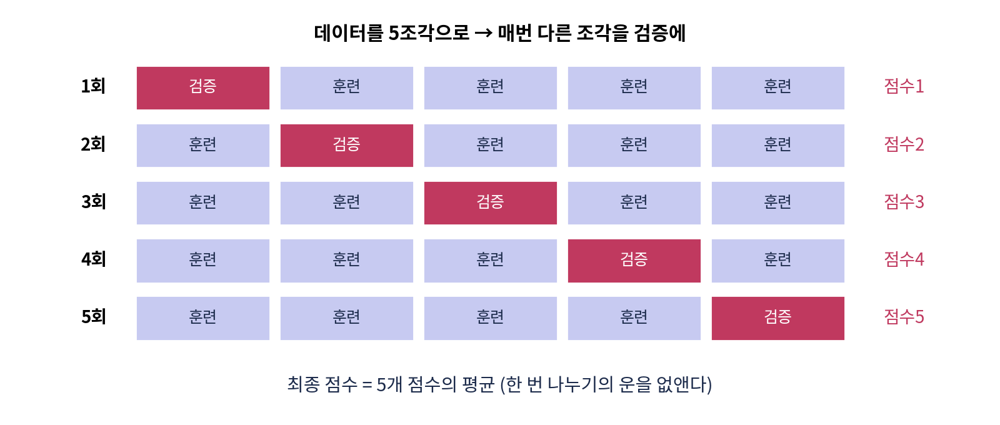
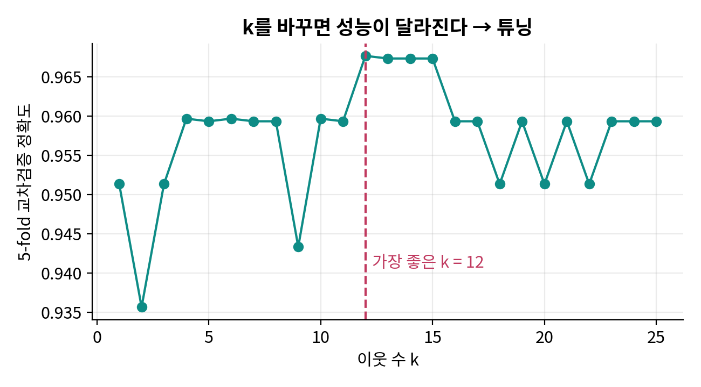
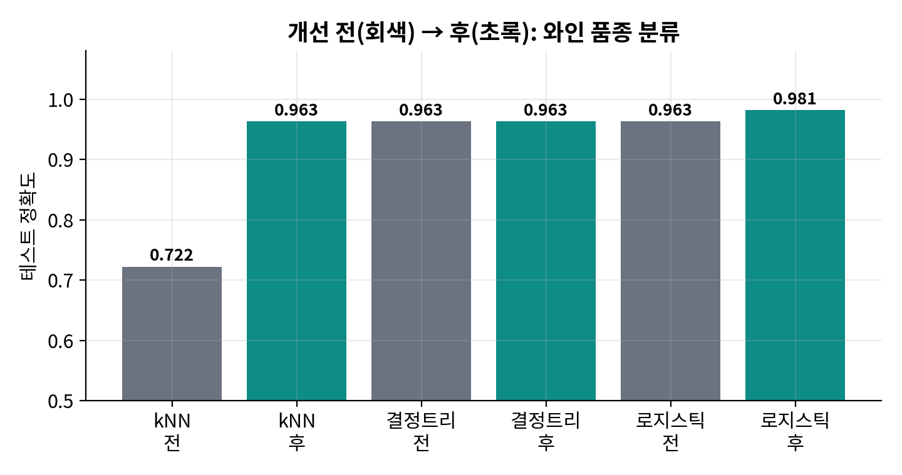

이 수업의 학습 목표
- 훈련·테스트 데이터를 나누어 모델을 공정하게 평가하는 이유를 설명한다.
- 정확도·정밀도·재현율·F1·혼동행렬을 읽고, 정확도만 믿으면 안 되는 경우를 예로 든다.
- 과적합을 그래프로 확인하고 교차검증·하이퍼파라미터 튜닝으로 모델을 개선한다.
- 여러 모델의 성능표를 근거로 개선 방향을 결정하고 이유를 쓴다.
수업 흐름 (120분)
| 0:00 | 인사 · 2회차 복습(지도학습·회귀/분류·3가지 알고리즘) · 오늘의 목표 | 강의 5분 |
| 0:05 | PART 1 왜 평가하는가 — 외운 모델 vs 이해한 모델, 훈련/검증/테스트 | 강의 15분 |
| 0:20 | PART 2 성능 지표 — 정확도의 함정, 혼동행렬, 정밀도/재현율/F1, 회귀 지표 | 강의 15분 |
| 0:35 | PART 3 개선하기 — 교차검증, 하이퍼파라미터 튜닝, 스케일링 | 강의 10분 |
| 0:45 | Colab 실습 — 모델 비교표 → 지표 읽기 → 과적합 실험 → 튜닝 → 개선 전후 비교 | 실습 60분 |
| 1:45 | 결과물 공유 · 퀴즈 · 정리 · 다음 시간 예고 | 15분 |
준비물 · 자료
- 구글 계정 + 크롬 브라우저(노트북 또는 태블릿)
- 실습 노트북
03_지도학습2_모델평가_실습_colab.ipynb(선생님 배포) - 데이터: scikit-learn 내장 와인 데이터(코드에서 자동 로드) · 참고용
data/wine.csv,data/study_score.csv - 강의 슬라이드
03_지도학습2_모델평가.pptx
탐구 과정(기능) · 평가
- 탐구과정: 모델 출력과 성능 지표를 비교·평가하여 개선 방향을 도출하고 튜닝 전략을 적용
- 수업방법: 강의 · 실습 · 질의응답
- 평가: 실습 결과 평가 — 모델 성능 결과를 바탕으로 개선 방향 결정
실습 환경 — Google Colab
- 구글 계정으로 로그인한 뒤 colab.research.google.com 에 접속합니다.
- 파일 → 노트 업로드에서 선생님이 나눠 준
.ipynb파일을 올립니다. (또는 새 노트를 만들고 이 페이지의 코드를 한 셀씩 복사해 붙여 넣어도 됩니다.) - 셀 왼쪽의 ▶ 버튼을 누르거나 Shift+Enter로 위에서부터 순서대로 실행합니다.
- 처음 실행하면 "런타임 연결 중"이 잠깐 뜹니다. 오류가 나면 런타임 → 런타임 다시 시작 후 처음부터 다시 실행하세요.
목차
P1 오늘 배우는 것 — 개념 정리P2 예제 — 개념당 짧은 코드 하나P3 Colab 실습 — 모델을 비교하고 개선하기P4 퀴즈 — 오늘 내용 확인P5 정리 · 평가 기준 · 더 해보기
P1 오늘 배우는 것 — 개념 정리P2 예제 — 개념당 짧은 코드 하나P3 Colab 실습 — 모델을 비교하고 개선하기P4 퀴즈 — 오늘 내용 확인P5 정리 · 평가 기준 · 더 해보기
PART 1오늘 배우는 것 — 개념 정리
지난 시간에는 정답이 있는 데이터로 배우는 지도학습과 세 가지 알고리즘(kNN·결정트리·로지스틱 회귀/선형회귀)을 만들어 보았습니다. 오늘은 "그래서 이 모델이 얼마나 잘하는가?"를 재는 법과, 점수를 올리는 법을 배웁니다.
1-1. 왜 평가가 필요한가 — 외운 학생과 이해한 학생
문제집 답을 통째로 외운 학생은 그 문제집은 100점이지만 새 문제는 못 풉니다. 모델도 훈련 데이터를 외워 버릴 수 있습니다. 이것을 과적합(overfitting)이라고 합니다. 반대로 너무 단순해서 훈련 데이터조차 못 맞히면 과소적합(underfitting)입니다.

핵심모델의 실력은 본 적 없는 데이터로 재야 한다. 그래서 데이터를 나눈다.
1-2. 훈련 / 검증 / 테스트 데이터

| 이름 | 역할 | 비유 | 코드 |
|---|---|---|---|
| 훈련(train) | 모델이 규칙을 배우는 데이터 | 문제집 풀기 | model.fit(X_train, y_train) |
| 검증(validation) | 설정(하이퍼파라미터)을 고를 때 쓰는 데이터 | 모의고사 | 교차검증 cross_val_score가 대신함 |
| 테스트(test) | 최종 실력을 재는 데이터 — 단 한 번 | 수능 | model.score(X_test, y_test) |
주의테스트 데이터를 보고 모델을 고치면, 그 순간 테스트는 더 이상 "본 적 없는 데이터"가 아닙니다. 설정을 고를 땐 검증(교차검증)을 쓰고, 테스트는 마지막에만!
1-3. 과적합을 눈으로 — 트리 깊이 실험

1-4. 성능 지표 ① 정확도와 그 함정
정확도(accuracy) = 맞힌 개수 ÷ 전체 개수. 가장 쉽지만, 정답이 한쪽으로 쏠린(불균형) 데이터에서는 속습니다.

1-5. 성능 지표 ② 혼동행렬 · 정밀도 · 재현율 · F1


| 지표 | 뜻 | 식 | 중요한 상황 |
|---|---|---|---|
| 정확도 | 전체 중 맞힌 비율 | (TP+TN) / 전체 | 정답 비율이 비슷할 때 |
| 정밀도(precision) | "양성"이라 한 것 중 진짜 양성 | TP / (TP+FP) | 스팸 필터(정상 메일을 스팸함에 넣으면 곤란) |
| 재현율(recall) | 진짜 양성 중 찾아낸 비율 | TP / (TP+FN) | 병 진단, 화재 감지(놓치면 큰일) |
| F1 | 정밀도와 재현율의 조화 평균 | 2·P·R / (P+R) | 둘 다 중요할 때, 불균형 데이터 |
시소 관계정밀도와 재현율은 보통 한쪽을 올리면 다른 쪽이 내려갑니다. "조금만 의심돼도 환자"라고 하면 재현율↑ 정밀도↓. 문제의 목적이 어느 쪽이 중요한지 정합니다.
1-6. 성능 지표 ③ 회귀 — 얼마나 빗나갔나
| 지표 | 뜻 | 읽는 법 |
|---|---|---|
| MAE (평균 절대 오차) | |실제 − 예측| 의 평균 | "평균 5.5점 틀린다" — 단위가 그대로라 직관적 |
| RMSE (평균 제곱근 오차) | 오차²의 평균에 √ | 큰 오차를 더 무겁게 벌줌. MAE보다 항상 크거나 같음 |
| R² (결정계수) | 1 − (모델 오차 / 평균으로 찍었을 때 오차) | 1이면 완벽, 0이면 "그냥 평균" 수준, 음수면 평균보다 못함 |
1-7. 개선하기 ① 교차검증 (cross-validation)

1-8. 개선하기 ② 하이퍼파라미터 튜닝
모델이 데이터에서 스스로 배우는 값(예: 선형회귀의 기울기)은 파라미터, 사람이 미리 정해 주는 값(kNN의 k, 트리의 깊이)은 하이퍼파라미터입니다. 좋은 값은 데이터마다 달라서 후보를 전부 시험해 봐야 합니다. GridSearchCV가 그 일을 교차검증으로 자동으로 해 줍니다.

1-9. 개선하기 ③ 스케일링 — kNN이 약했던 진짜 이유
kNN은 거리로 이웃을 찾습니다. 와인 데이터의 proline은 값이 수백~천 단위, hue는 1 근처라서 거리가 큰 열에만 좌우됩니다. StandardScaler로 모든 열을 평균 0·표준편차 1로 맞추면 kNN 정확도가 0.72 → 0.94로 뜁니다(실습 7단계).

개선의 순환① 여러 모델을 같은 조건으로 비교 → ② 지표를 목적에 맞게 읽기 → ③ 과적합/과소적합 진단 → ④ 튜닝·전처리 → ⑤ 테스트로 최종 확인 → 근거를 적어 결정
PART 2예제 — 개념당 짧은 코드 하나
실습 전에 핵심 함수만 아주 짧게 맛봅니다. 각 예제는 Colab 새 노트에 붙여 넣어도 바로 돌아갑니다(첫 예제의 import 포함).
예제 1. 데이터 나누고 정확도 재기
from sklearn.datasets import load_iris
from sklearn.model_selection import train_test_split
from sklearn.neighbors import KNeighborsClassifier
X, y = load_iris(return_X_y=True) # 붓꽃 150송이, 정답 3종
X_tr, X_te, y_tr, y_te = train_test_split(X, y, test_size=0.3, random_state=0)
model = KNeighborsClassifier(n_neighbors=3).fit(X_tr, y_tr) # 훈련 데이터로 학습
print('훈련 정확도', round(model.score(X_tr, y_tr), 3))
print('테스트 정확도', round(model.score(X_te, y_te), 3)) # 본 적 없는 데이터로 시험예상 출력
훈련 정확도 0.962 테스트 정확도 0.978
예제 2. 혼동행렬과 분류 리포트
from sklearn.metrics import confusion_matrix, classification_report y_pred = model.predict(X_te) print(confusion_matrix(y_te, y_pred)) # 행=실제, 열=예측, 대각선=정답 print(classification_report(y_te, y_pred)) # 정밀도·재현율·F1 한 번에
예상 출력
[[16 0 0]
[ 0 17 1]
[ 0 0 11]]
precision recall f1-score support
0 1.00 1.00 1.00 16
1 1.00 0.94 0.97 18
2 0.92 1.00 0.96 11
accuracy 0.98 45
macro avg 0.97 0.98 0.98 45
weighted avg 0.98 0.98 0.98 45예제 3. 교차검증 한 줄
from sklearn.model_selection import cross_val_score scores = cross_val_score(KNeighborsClassifier(n_neighbors=3), X_tr, y_tr, cv=5) # 5번 시험 print(scores.round(3), '평균', scores.mean().round(3))
예상 출력
[0.857 1. 1. 0.905 0.952] 평균 0.943
예제 4. GridSearchCV로 k 고르기
from sklearn.model_selection import GridSearchCV
grid = GridSearchCV(KNeighborsClassifier(), {'n_neighbors': [1, 3, 5, 7, 9, 11]}, cv=5)
grid.fit(X_tr, y_tr) # 후보 6개 × 5번 = 30번 학습
print(grid.best_params_, round(grid.best_score_, 3))예상 출력
{'n_neighbors': 5} 0.962예제 5. 회귀 지표
import numpy as np
from sklearn.metrics import mean_absolute_error, mean_squared_error, r2_score
실제 = np.array([70, 80, 90, 60]); 예측 = np.array([72, 75, 95, 58])
print('MAE ', mean_absolute_error(실제, 예측)) # |2|,|5|,|5|,|2| 평균
print('RMSE', np.sqrt(mean_squared_error(실제, 예측)).round(2))
print('R² ', round(r2_score(실제, 예측), 3))예상 출력
MAE 3.5 RMSE 3.81 R² 0.884
PART 3Colab 실습 — 모델을 비교하고 개선하기
노트북
03_지도학습2_모델평가_실습_colab.ipynb의 셀과 완전히 같은 코드입니다. 각 셀이 무엇을 하는지, 함수 인자가 무슨 뜻인지, 출력을 어떻게 읽는지를 노트북보다 자세히 적었습니다. 아래 "예상 출력"은 실제로 실행한 결과입니다(Colab의 라이브러리 버전에 따라 소수점 셋째 자리가 조금 다를 수 있습니다).1준비 — 도구 불러오기와 한글 폰트
무엇을: 표(
왜: Colab은 새 컴퓨터를 빌려 쓰는 것과 같아 매번 도구를 불러와야 하고, 한글 폰트가 없어 그래프 글자가 □□로 깨집니다.
줄별 설명:
확인: "준비 완료!"와 버전 번호가 찍히면 성공.
pandas)·숫자(numpy)·그림(matplotlib) 도구를 불러오고 한글 폰트를 설치합니다.왜: Colab은 새 컴퓨터를 빌려 쓰는 것과 같아 매번 도구를 불러와야 하고, 한글 폰트가 없어 그래프 글자가 □□로 깨집니다.
줄별 설명:
subprocess.run([...apt-get...])은 리눅스 명령으로 나눔 폰트를 설치합니다(check=False: 실패해도 멈추지 않음). fm.fontManager.addfont로 matplotlib에 폰트를 등록하고 rcParams['font.family']로 기본 글꼴을 바꿉니다. axes.unicode_minus=False는 음수 부호(−)가 깨지는 것을 막습니다. warnings.filterwarnings('ignore')는 학습 중 나오는 경고문을 숨깁니다.확인: "준비 완료!"와 버전 번호가 찍히면 성공.
import matplotlib.pyplot as plt, matplotlib as mpl, numpy as np, pandas as pd
import subprocess, sys
try:
subprocess.run(['apt-get','-qq','install','-y','fonts-nanum'], check=False, capture_output=True) # Colab 한글 폰트
import matplotlib.font_manager as fm; fm.fontManager.addfont('/usr/share/fonts/truetype/nanum/NanumGothic.ttf'); plt.rcParams['font.family']='NanumGothic'
except Exception:
plt.rcParams['font.family'] = 'Noto Sans CJK JP' # 로컬 검증용
plt.rcParams['axes.unicode_minus'] = False
import warnings; warnings.filterwarnings('ignore')
print('준비 완료! numpy', np.__version__, '| pandas', pd.__version__)예상 출력
준비 완료! numpy 2.4.3 | pandas 2.3.3
막혔을 때 · 자주 나는 오류
ModuleNotFoundError가 나면 런타임 → 런타임 다시 시작 후 다시 실행. 폰트 설치 후에도 한글이 깨지면 런타임 다시 시작(폰트 캐시가 새로 읽힘) 후 이 셀부터 다시 실행하세요.2데이터 불러오기 — 와인 품종 분류
무엇을: scikit-learn 안에 들어 있는 와인 178병 데이터를 불러옵니다. 인터넷·파일 업로드가 필요 없습니다.
인자:
출력 읽기:
인자:
as_frame=True는 결과를 numpy 배열 대신 pandas 표로 받겠다는 뜻입니다(열 이름이 보여 편함). wine.data가 입력 13열, wine.target이 정답(품종 0·1·2)입니다.출력 읽기:
(178, 13) = 178행(병) × 13열(성분). value_counts()로 품종별 개수(59·71·48)를 보면 거의 균형이라 정확도를 써도 괜찮다는 것을 알 수 있습니다. X.head()는 앞 5줄 — 열마다 숫자 크기가 크게 다르다는 점(alcohol 13, proline 1000)을 기억해 두세요(7단계 복선).from sklearn.datasets import load_wine
wine = load_wine(as_frame=True) # as_frame=True → pandas 표로 받기
X = wine.data # 입력: 13개 성분
y = wine.target # 정답: 품종 0/1/2
print('데이터 크기 (행, 열):', X.shape)
print('품종별 개수:\n', y.value_counts().sort_index())
X.head() # 앞 5줄 미리보기예상 출력
데이터 크기 (행, 열): (178, 13) 품종별 개수: target 0 59 1 71 2 48 Name: count, dtype: int64 alcohol malic_acid ash alcalinity_of_ash magnesium total_phenols \ 0 14.23 1.71 2.43 15.6 127.0 2.80 1 13.20 1.78 2.14 11.2 100.0 2.65 2 13.16 2.36 2.67 18.6 101.0 2.80 3 14.37 1.95 2.50 16.8 113.0 3.85 4 13.24 2.59 2.87 21.0 118.0 2.80 flavanoids nonflavanoid_phenols proanthocyanins color_intensity hue \ 0 3.06 0.28 2.29 5.64 1.04 1 2.76 0.26 1.28 4.38 1.05 2 3.24 0.30 2.81 5.68 1.03 3 3.49 0.24 2.18 7.80 0.86 4 2.69 0.39 1.82 4.32 1.04 od280/od315_of_diluted_wines proline 0 3.92 1065.0 1 3.40 1050.0 2 3.17 1185.0 3 3.45 1480.0 4 2.93 735.0
✔ 확인해 보기품종 1이 몇 병인지 말해 보세요. 열 이름 중 값이 가장 큰 열은 무엇인가요?
3훈련 / 테스트 데이터 나누기
무엇을: 178병을 훈련 124병(70%)과 테스트 54병(30%)으로 나눕니다.
인자:
반환 순서:
왜 중요: 이 이후로 테스트 데이터는 최종 확인(10단계)까지 건드리지 않습니다.
인자:
test_size=0.3 테스트 비율 30% · random_state=42 무작위 섞기의 씨앗을 고정해 누구나 같은 결과 · stratify=y 품종 비율이 훈련/테스트에 똑같이 들어가도록(층화 추출).반환 순서:
X_train, X_test, y_train, y_test — 순서를 바꾸면 조용히 엉뚱한 결과가 나오니 외워 두세요.왜 중요: 이 이후로 테스트 데이터는 최종 확인(10단계)까지 건드리지 않습니다.
from sklearn.model_selection import train_test_split
X_train, X_test, y_train, y_test = train_test_split(X, y, test_size=0.3, random_state=42, stratify=y)
print('훈련 데이터:', X_train.shape[0], '병 / 테스트 데이터:', X_test.shape[0], '병')예상 출력
훈련 데이터: 124 병 / 테스트 데이터: 54 병
막혔을 때 · 자주 나는 오류
stratify=y에서 오류가 나면 y가 표(DataFrame)가 아닌지 확인 — 여기서는 Series라 괜찮습니다.4여러 모델 학습 → 정확도 비교표
무엇을: 세 모델을 딕셔너리에 넣고
줄별:
출력 읽기: 결정트리는 훈련 1.000 / 테스트 0.963 → 외운 흔적(과적합). kNN은 0.806 / 0.722로 둘 다 낮음 → 과소적합처럼 보이지만 진짜 원인은 7단계에서 밝혀집니다. 로지스틱 회귀 0.992 / 0.963.
for문으로 같은 훈련 데이터로 학습, 같은 테스트로 시험합니다. 공정한 비교의 기본입니다.줄별:
model.fit(X_train, y_train) 학습 → model.score(X_train, y_train) 훈련 정확도, score(X_test, y_test) 테스트 정확도. rows.append({...})로 한 줄씩 모아 pd.DataFrame(rows)로 표를 만듭니다. max_iter=5000은 로지스틱 회귀가 답을 찾는 반복 횟수 상한입니다.출력 읽기: 결정트리는 훈련 1.000 / 테스트 0.963 → 외운 흔적(과적합). kNN은 0.806 / 0.722로 둘 다 낮음 → 과소적합처럼 보이지만 진짜 원인은 7단계에서 밝혀집니다. 로지스틱 회귀 0.992 / 0.963.
from sklearn.neighbors import KNeighborsClassifier
from sklearn.tree import DecisionTreeClassifier
from sklearn.linear_model import LogisticRegression
models = {
'kNN (k=5)': KNeighborsClassifier(n_neighbors=5),
'결정트리 (깊이 제한 없음)': DecisionTreeClassifier(random_state=0),
'로지스틱 회귀': LogisticRegression(max_iter=5000),
}
rows = []
for name, model in models.items():
model.fit(X_train, y_train) # 학습
rows.append({'모델': name,
'훈련 정확도': round(model.score(X_train, y_train), 3),
'테스트 정확도': round(model.score(X_test, y_test), 3)})
result = pd.DataFrame(rows)
result예상 출력
모델 훈련 정확도 테스트 정확도 0 kNN (k=5) 0.806 0.722 1 결정트리 (깊이 제한 없음) 1.000 0.963 2 로지스틱 회귀 0.992 0.963
✔ 확인해 보기훈련 정확도와 테스트 정확도의 차이가 가장 큰 모델은? 그것이 뜻하는 것은?
5혼동행렬과 분류 리포트
무엇을: 결정트리의 테스트 예측
출력 읽기: 행렬
그림:
y_pred를 실제 y_test와 맞대어 어떤 품종을 어떤 품종으로 착각했는지 봅니다.출력 읽기: 행렬
[[17 1 0],[1 20 0],[0 0 15]]: 1행은 "실제 품종0" 18병 중 17병 정답, 1병을 품종1로 착각. 2행은 실제 품종1 21병 중 20병 정답. 품종2는 15병 전부 정답. 대각선 합(52) ÷ 54 = 0.963이 정확도입니다.classification_report의 precision은 세로(예측) 기준, recall은 가로(실제) 기준 비율, support는 실제 개수, macro avg는 세 품종 평균입니다.그림:
ConfusionMatrixDisplay(...).plot(cmap='Blues')가 같은 행렬을 색으로 그립니다(진할수록 많음).from sklearn.metrics import confusion_matrix, classification_report, ConfusionMatrixDisplay
model = models['결정트리 (깊이 제한 없음)']
y_pred = model.predict(X_test) # 테스트 데이터 예측
cm = confusion_matrix(y_test, y_pred)
print('혼동행렬 (행=실제, 열=예측):\n', cm)
ConfusionMatrixDisplay(cm, display_labels=['품종0', '품종1', '품종2']).plot(cmap='Blues')
plt.title('결정트리 혼동행렬 (테스트 데이터)'); plt.show()
print(classification_report(y_test, y_pred, target_names=['품종0', '품종1', '품종2']))예상 출력
혼동행렬 (행=실제, 열=예측):
[[17 1 0]
[ 1 20 0]
[ 0 0 15]]
[그래프가 표시됩니다] precision recall f1-score support
품종0 0.94 0.94 0.94 18
품종1 0.95 0.95 0.95 21
품종2 1.00 1.00 1.00 15
accuracy 0.96 54
macro avg 0.97 0.97 0.97 54
weighted avg 0.96 0.96 0.96 54✔ 확인해 보기품종0의 재현율 0.94는 어떻게 계산된 값인가요? (17 ÷ 18)
6정확도의 함정 — 불균형 데이터
무엇을: 환자 5%·정상 95%인 가상 체온 데이터를 만들고, "전부 정상"이라 답하는 엉터리 모델(
데이터 만들기:
출력 읽기: 엉터리 모델도 정확도 0.957! 하지만 재현율 0 — 환자를 한 명도 못 찾음. 진짜 모델은 정확도 0.983, 재현율 0.615, 정밀도 1.000. 정확도 차이는 작지만 쓸모는 하늘과 땅입니다.
DummyClassifier(strategy='most_frequent'))과 진짜 학습한 로지스틱 회귀를 비교합니다.데이터 만들기:
rng.random(n) < 0.05로 5%만 True(환자). np.where(sick, 38.5도 근처, 36.8도 근처)로 환자는 체온이 높게. reshape(-1, 1)은 열이 1개인 표 모양으로 바꾸는 것(scikit-learn은 2차원 입력을 요구).출력 읽기: 엉터리 모델도 정확도 0.957! 하지만 재현율 0 — 환자를 한 명도 못 찾음. 진짜 모델은 정확도 0.983, 재현율 0.615, 정밀도 1.000. 정확도 차이는 작지만 쓸모는 하늘과 땅입니다.
zero_division=0은 0÷0일 때 오류 대신 0을 내라는 뜻.from sklearn.dummy import DummyClassifier
from sklearn.metrics import accuracy_score, recall_score, precision_score
rng = np.random.default_rng(0)
n = 1000
sick = rng.random(n) < 0.05 # 5%만 환자(True)
temp = np.where(sick, rng.normal(38.5, 0.6, n), rng.normal(36.8, 0.4, n)) # 체온: 환자는 높음
Xh = temp.reshape(-1, 1); yh = sick.astype(int)
Xh_tr, Xh_te, yh_tr, yh_te = train_test_split(Xh, yh, test_size=0.3, random_state=0, stratify=yh)
dummy = DummyClassifier(strategy='most_frequent').fit(Xh_tr, yh_tr) # "전부 정상" 모델
real = LogisticRegression().fit(Xh_tr, yh_tr) # 진짜 학습한 모델
for name, m in [('전부 정상 모델', dummy), ('진짜 학습 모델', real)]:
p = m.predict(Xh_te)
print(f'{name:10s} 정확도 {accuracy_score(yh_te, p):.3f} | 재현율(환자 찾기) {recall_score(yh_te, p, zero_division=0):.3f} | 정밀도 {precision_score(yh_te, p, zero_division=0):.3f}')예상 출력
전부 정상 모델 정확도 0.957 | 재현율(환자 찾기) 0.000 | 정밀도 0.000 진짜 학습 모델 정확도 0.983 | 재현율(환자 찾기) 0.615 | 정밀도 1.000
✔ 확인해 보기이 문제에서 정확도 대신 어떤 지표를 봐야 할까요? 왜?
7과적합 실험 — 트리 깊이 1~15
무엇을:
줄별:
출력 읽기: 깊이 1~2에서는 둘 다 낮음(과소적합). 깊이 3에서 테스트 0.981로 최고. 4 이상은 훈련 1.000, 테스트 0.963으로 제자리(과적합). 가장 단순하면서 테스트가 높은 깊이 3이 답입니다.
max_depth를 1부터 15까지 바꾸며 트리를 15번 학습해 훈련/테스트 정확도를 그래프로 그립니다.줄별:
for d in depths 안에서 매번 새 트리를 만들어 학습(fit)하고 두 점수를 리스트에 추가. plt.plot(x, y, 'o-')는 점+선. np.argmax(test_acc)는 가장 큰 값의 위치(0부터)라서 +1을 해 깊이로 바꿉니다.출력 읽기: 깊이 1~2에서는 둘 다 낮음(과소적합). 깊이 3에서 테스트 0.981로 최고. 4 이상은 훈련 1.000, 테스트 0.963으로 제자리(과적합). 가장 단순하면서 테스트가 높은 깊이 3이 답입니다.
depths = range(1, 16)
train_acc, test_acc = [], []
for d in depths:
t = DecisionTreeClassifier(max_depth=d, random_state=0).fit(X_train, y_train)
train_acc.append(t.score(X_train, y_train)); test_acc.append(t.score(X_test, y_test))
plt.figure(figsize=(7, 4))
plt.plot(depths, train_acc, 'o-', label='훈련 정확도'); plt.plot(depths, test_acc, 's-', label='테스트 정확도')
plt.xlabel('max_depth (트리 깊이)'); plt.ylabel('정확도'); plt.title('깊이에 따른 훈련/테스트 정확도'); plt.legend(); plt.grid(alpha=.3); plt.show()
best_depth = int(np.argmax(test_acc)) + 1
print('테스트 정확도가 가장 높은 깊이:', best_depth, '→ 정확도', round(max(test_acc), 3))예상 출력
[그래프가 표시됩니다]테스트 정확도가 가장 높은 깊이: 3 → 정확도 0.981
✔ 확인해 보기그래프에서 과소적합 구간과 과적합 구간을 손가락으로 가리켜 보세요.
8kNN이 약했던 이유 — 스케일링
무엇을: 열마다 숫자 크기가 얼마나 다른지 확인하고,
줄별:
출력 읽기: proline 평균 747 vs hue 0.96 → 거리 계산이 proline에만 좌우됨. 스케일링 후 kNN 테스트 정확도 0.722 → 0.944. 모델을 바꾸지 않고 전처리만으로 22%p 개선!
StandardScaler로 크기를 맞춘 kNN과 안 맞춘 kNN을 비교합니다.줄별:
X.describe().loc[['mean','max'], [...]]는 세 열의 평균·최댓값만 골라 보기. make_pipeline(StandardScaler(), KNeighborsClassifier(...))는 "① 스케일링 → ② kNN"을 한 모델처럼 묶은 파이프라인 — fit 한 번으로 스케일러 학습과 kNN 학습이 순서대로 됩니다(테스트 데이터엔 훈련에서 배운 평균·표준편차를 그대로 적용해 정보 유출 방지).출력 읽기: proline 평균 747 vs hue 0.96 → 거리 계산이 proline에만 좌우됨. 스케일링 후 kNN 테스트 정확도 0.722 → 0.944. 모델을 바꾸지 않고 전처리만으로 22%p 개선!
from sklearn.preprocessing import StandardScaler
from sklearn.pipeline import make_pipeline
print('열마다 크기가 다르다 →\n', X.describe().loc[['mean', 'max'], ['alcohol', 'hue', 'proline']].round(2))
knn_raw = KNeighborsClassifier(n_neighbors=5).fit(X_train, y_train)
knn_scaled = make_pipeline(StandardScaler(), KNeighborsClassifier(n_neighbors=5)).fit(X_train, y_train)
print('\nkNN 스케일링 전 테스트 정확도:', round(knn_raw.score(X_test, y_test), 3))
print('kNN 스케일링 후 테스트 정확도:', round(knn_scaled.score(X_test, y_test), 3))예상 출력
열마다 크기가 다르다 →
alcohol hue proline
mean 13.00 0.96 746.89
max 14.83 1.71 1680.00
kNN 스케일링 전 테스트 정확도: 0.722
kNN 스케일링 후 테스트 정확도: 0.944막혔을 때 · 자주 나는 오류
결정트리는 스케일링이 필요 없습니다(열 하나씩 "크다/작다"만 묻기 때문). 거리·기울기를 쓰는 kNN·로지스틱 회귀·선형회귀는 스케일링이 도움이 됩니다.
9교차검증 — 한 번 나누기의 운 없애기
무엇을: 세 후보 모델을
출력 읽기: 5개 점수가
f-string:
cross_val_score(모델, X_train, y_train, cv=5)로 5번씩 시험해 평균과 편차를 봅니다. 테스트 데이터는 쓰지 않고 훈련 데이터만 5조각으로 돌려 씁니다.출력 읽기: 5개 점수가
[0.92 0.96 1. 1. 0.917]처럼 조각마다 다릅니다 — 한 번만 나눴다면 0.917이 나왔을 수도, 1.0이 나왔을 수도 있었다는 뜻. 평균(0.959)과 ±편차(0.037)를 함께 보면 얼마나 안정적인 모델인지 알 수 있습니다. 로지스틱 회귀(스케일링)가 평균 0.984, 편차 0.020으로 가장 높고 안정적입니다.f-string:
f'{name:22s}'는 22칸 맞춰 출력, {scores.mean():.3f}는 소수 셋째 자리.from sklearn.model_selection import cross_val_score
cands = {
'kNN(k=5, 스케일링)': make_pipeline(StandardScaler(), KNeighborsClassifier(n_neighbors=5)),
f'결정트리(깊이 {best_depth})': DecisionTreeClassifier(max_depth=best_depth, random_state=0),
'로지스틱 회귀(스케일링)': make_pipeline(StandardScaler(), LogisticRegression(max_iter=5000)),
}
for name, m in cands.items():
scores = cross_val_score(m, X_train, y_train, cv=5)
print(f'{name:22s} 5번 점수 {np.round(scores, 3)} → 평균 {scores.mean():.3f} (±{scores.std():.3f})')예상 출력
kNN(k=5, 스케일링) 5번 점수 [0.92 0.96 1. 1. 0.917] → 평균 0.959 (±0.037) 결정트리(깊이 3) 5번 점수 [0.92 0.88 0.92 0.96 0.792] → 평균 0.894 (±0.057) 로지스틱 회귀(스케일링) 5번 점수 [1. 0.96 1. 1. 0.958] → 평균 0.984 (±0.020)
✔ 확인해 보기편차(±)가 크다는 것은 무엇을 뜻할까요?
10GridSearchCV — 하이퍼파라미터 튜닝
무엇을: kNN의 k(1~25)와 결정트리의 깊이(1~10)·잎 최소 크기(1,2,4)를 후보 전부 교차검증으로 시험해 최적값을 찾습니다.
인자:
출력 읽기: kNN 최적 k=12(교차검증 0.968), 트리 최적
주의:
인자:
param_grid는 {옵션이름: 후보 목록}. 파이프라인 안 모델의 옵션은 단계이름__옵션(밑줄 두 개)으로 씁니다 — 단계이름은 클래스 이름을 소문자로 쓴 것(kneighborsclassifier). 트리는 후보 10×3 = 30가지 × 5번 = 150번 학습하지만 몇 초면 끝납니다.출력 읽기: kNN 최적 k=12(교차검증 0.968), 트리 최적
max_depth=3, min_samples_leaf=4(0.902). cv_results_['mean_test_score']는 후보별 평균 점수 — 그래프로 그리면 k에 따라 점수가 출렁이는 것이 보입니다.주의:
best_score_는 교차검증 점수(모의고사)입니다. 최종 점수는 10단계에서 테스트로 냅니다.from sklearn.model_selection import GridSearchCV
# (1) kNN의 k 튜닝
grid_knn = GridSearchCV(make_pipeline(StandardScaler(), KNeighborsClassifier()),
param_grid={'kneighborsclassifier__n_neighbors': list(range(1, 26))}, cv=5)
grid_knn.fit(X_train, y_train)
print('kNN 최적 k =', grid_knn.best_params_['kneighborsclassifier__n_neighbors'], '| 교차검증 평균', round(grid_knn.best_score_, 3))
# (2) 결정트리의 깊이 튜닝
grid_tree = GridSearchCV(DecisionTreeClassifier(random_state=0),
param_grid={'max_depth': list(range(1, 11)), 'min_samples_leaf': [1, 2, 4]}, cv=5)
grid_tree.fit(X_train, y_train)
print('트리 최적 설정 =', grid_tree.best_params_, '| 교차검증 평균', round(grid_tree.best_score_, 3))
# k별 점수 그래프
ks = range(1, 26); ms = grid_knn.cv_results_['mean_test_score']
plt.figure(figsize=(7, 3.5)); plt.plot(list(ks), ms, 'o-'); plt.xlabel('k'); plt.ylabel('교차검증 정확도'); plt.title('kNN: k에 따른 점수'); plt.grid(alpha=.3); plt.show()예상 출력
kNN 최적 k = 12 | 교차검증 평균 0.968
트리 최적 설정 = {'max_depth': 3, 'min_samples_leaf': 4} | 교차검증 평균 0.902
[그래프가 표시됩니다]막혔을 때 · 자주 나는 오류
옵션 이름을 모르면
make_pipeline(...).get_params().keys()를 출력해 보세요. 이름을 틀리면 Invalid parameter 오류가 납니다.11개선 전 → 후 비교표 (테스트로 최종 확인)
무엇을: 3단계의 기본 모델([전])과 튜닝·전처리한 모델([후])을 아껴 둔 테스트 데이터로 딱 한 번 채점해 한 표에 놓습니다.
줄별:
출력 읽기(실제 값): kNN 0.722 → 0.963(가장 큰 개선). 결정트리 0.963 → 0.963(점수는 같지만 깊이 3의 더 단순한 모델이므로 후를 택함 — 단순할수록 새 데이터에 강함). 로지스틱 회귀 0.963 → 0.981(최고). 이 표가 오늘의 제출물 근거입니다.
줄별:
grid_knn.best_estimator_는 최적 k로 훈련 데이터 전체를 다시 학습한 완성 모델. f1_score(..., average='macro')는 품종 3개의 F1을 단순 평균.출력 읽기(실제 값): kNN 0.722 → 0.963(가장 큰 개선). 결정트리 0.963 → 0.963(점수는 같지만 깊이 3의 더 단순한 모델이므로 후를 택함 — 단순할수록 새 데이터에 강함). 로지스틱 회귀 0.963 → 0.981(최고). 이 표가 오늘의 제출물 근거입니다.
from sklearn.metrics import f1_score
final = {
'[전] kNN (k=5, 스케일 X)': models['kNN (k=5)'],
'[후] kNN (스케일 + k 튜닝)': grid_knn.best_estimator_,
'[전] 결정트리 (깊이 제한 X)': models['결정트리 (깊이 제한 없음)'],
'[후] 결정트리 (깊이·잎 튜닝)': grid_tree.best_estimator_,
'[전] 로지스틱 회귀 (스케일 X)': models['로지스틱 회귀'],
'[후] 로지스틱 회귀 (스케일 O)': cands['로지스틱 회귀(스케일링)'].fit(X_train, y_train),
}
rows = []
for name, m in final.items():
p = m.predict(X_test)
rows.append({'모델': name, '테스트 정확도': round(accuracy_score(y_test, p), 3),
'F1(평균)': round(f1_score(y_test, p, average='macro'), 3)})
compare = pd.DataFrame(rows)
compare예상 출력
모델 테스트 정확도 F1(평균) 0 [전] kNN (k=5, 스케일 X) 0.722 0.717 1 [후] kNN (스케일 + k 튜닝) 0.963 0.964 2 [전] 결정트리 (깊이 제한 X) 0.963 0.966 3 [후] 결정트리 (깊이·잎 튜닝) 0.963 0.965 4 [전] 로지스틱 회귀 (스케일 X) 0.963 0.961 5 [후] 로지스틱 회귀 (스케일 O) 0.981 0.983
✔ 확인해 보기"점수가 같으면 단순한 모델을 고른다"는 원칙을 뭐라고 부를까요? (오컴의 면도날)
12회귀 모델의 평가 — MAE · RMSE · R²
무엇을: 2회차와 같은 규칙으로 "공부시간·수면시간 → 성적" 가상 데이터 120명을 만들고 선형회귀·결정트리 회귀(깊이 제한 X / 깊이 3)를 세 지표로 비교합니다.
데이터: 성적 = 40 + 6.5×공부시간 − 1.2×(수면−7)² + 잡음 → 공부할수록 오르고, 수면은 7시간 근처가 최고인 규칙.
출력 읽기: 선형회귀 MAE 5.53점(평균 5.5점 빗나감), RMSE 7.46, R² 0.747(성적 변동의 75%를 설명). 깊이 제한 없는 트리는 MAE 7.65·R² 0.561로 과적합, 깊이 3으로 제한하면 5.86·0.738로 회복. 회귀에서도 과적합 원리는 같습니다. RMSE ≥ MAE인 것도 확인하세요.
데이터: 성적 = 40 + 6.5×공부시간 − 1.2×(수면−7)² + 잡음 → 공부할수록 오르고, 수면은 7시간 근처가 최고인 규칙.
np.clip(…, 0, 100)은 0~100점 밖으로 나가지 않게.출력 읽기: 선형회귀 MAE 5.53점(평균 5.5점 빗나감), RMSE 7.46, R² 0.747(성적 변동의 75%를 설명). 깊이 제한 없는 트리는 MAE 7.65·R² 0.561로 과적합, 깊이 3으로 제한하면 5.86·0.738로 회복. 회귀에서도 과적합 원리는 같습니다. RMSE ≥ MAE인 것도 확인하세요.
from sklearn.linear_model import LinearRegression
from sklearn.tree import DecisionTreeRegressor
from sklearn.metrics import mean_absolute_error, mean_squared_error, r2_score
rng = np.random.default_rng(2026); n = 120
study = np.round(rng.uniform(0.5, 8, n), 1); sleep = np.round(rng.normal(6.5, 1, n), 1)
score = np.clip(40 + 6.5*study - 1.2*(sleep-7)**2 + rng.normal(0, 7, n), 0, 100).round(1)
df = pd.DataFrame({'공부시간': study, '수면시간': sleep, '성적': score})
Xr, yr = df[['공부시간', '수면시간']], df['성적']
Xr_tr, Xr_te, yr_tr, yr_te = train_test_split(Xr, yr, test_size=0.3, random_state=1)
for name, m in [('선형회귀', LinearRegression()), ('결정트리 회귀(깊이 제한 X)', DecisionTreeRegressor(random_state=0)),
('결정트리 회귀(깊이 3)', DecisionTreeRegressor(max_depth=3, random_state=0))]:
m.fit(Xr_tr, yr_tr); p = m.predict(Xr_te)
print(f'{name:20s} MAE {mean_absolute_error(yr_te, p):5.2f}점 | RMSE {np.sqrt(mean_squared_error(yr_te, p)):5.2f}점 | R² {r2_score(yr_te, p):.3f}')예상 출력
선형회귀 MAE 5.53점 | RMSE 7.46점 | R² 0.747 결정트리 회귀(깊이 제한 X) MAE 7.65점 | RMSE 9.83점 | R² 0.561 결정트리 회귀(깊이 3) MAE 5.86점 | RMSE 7.60점 | R² 0.738
13🧩 직접 해보기 1 — 로지스틱 회귀 C 튜닝
과제: 로지스틱 회귀의 하이퍼파라미터
예상 결과: 최적 C=1, 교차검증 0.984, 테스트 0.981. (
C(작을수록 단순한 모델, 클수록 훈련 데이터에 더 맞춤) 후보 [0.01, 0.1, 1, 10, 100]을 GridSearchCV로 시험합니다. 10단계의 코드를 흉내 내면 됩니다. 옵션 이름은 logisticregression__C.예상 결과: 최적 C=1, 교차검증 0.984, 테스트 0.981. (
grid.score는 최적 모델로 채점.)grid_lr = GridSearchCV(make_pipeline(StandardScaler(), LogisticRegression(max_iter=5000)),
param_grid={'logisticregression__C': [0.01, 0.1, 1, 10, 100]}, # TODO: 후보 목록이 맞는지 확인
cv=5)
grid_lr.fit(X_train, y_train) # TODO: 훈련 데이터로 fit
print('최적 C =', grid_lr.best_params_, '| 교차검증 평균', round(grid_lr.best_score_, 3))
print('테스트 정확도 =', round(grid_lr.score(X_test, y_test), 3))예상 출력
최적 C = {'logisticregression__C': 1} | 교차검증 평균 0.984
테스트 정확도 = 0.981막혔을 때 · 자주 나는 오류
TODO 줄을 지우지 말고 값만 바꾸세요. fit에 테스트 데이터를 넣으면 안 됩니다 — 튜닝은 훈련 데이터로만!14🧩 직접 해보기 2 — 판정 문턱값 바꾸기
과제: 6단계의 진짜 모델
출력 읽기: 0.5 → 재현율 0.615·정밀도 1.0; 0.1 → 재현율 0.923·정밀도 0.800. 문턱값을 낮추면 환자를 더 많이 찾지만(재현율↑) 헛경보도 늘어남(정밀도↓). 병 진단이라면 어느 쪽이 나을지 토론해 보세요. (0.3과 0.2에서 값이 같은 것은 그 사이에 확률이 걸린 사람이 없기 때문입니다.)
real이 "환자"라고 판정하는 확률 문턱값을 0.5 → 0.3 → 0.2 → 0.1로 낮춰 재현율·정밀도가 어떻게 움직이는지 봅니다. predict_proba(...)[:, 1]은 각 사람이 환자일 확률(0~1), (proba >= thr).astype(int)는 문턱값 이상이면 1(환자).출력 읽기: 0.5 → 재현율 0.615·정밀도 1.0; 0.1 → 재현율 0.923·정밀도 0.800. 문턱값을 낮추면 환자를 더 많이 찾지만(재현율↑) 헛경보도 늘어남(정밀도↓). 병 진단이라면 어느 쪽이 나을지 토론해 보세요. (0.3과 0.2에서 값이 같은 것은 그 사이에 확률이 걸린 사람이 없기 때문입니다.)
proba = real.predict_proba(Xh_te)[:, 1] # 환자일 확률
for thr in [0.5, 0.3, 0.2, 0.1]: # TODO: 다른 문턱값도 넣어 보세요
p = (proba >= thr).astype(int) # 확률이 문턱값 이상이면 환자(1)
print(f'문턱값 {thr:.1f} → 재현율 {recall_score(yh_te, p):.3f} | 정밀도 {precision_score(yh_te, p, zero_division=0):.3f} | 정확도 {accuracy_score(yh_te, p):.3f}')예상 출력
문턱값 0.5 → 재현율 0.615 | 정밀도 1.000 | 정확도 0.983 문턱값 0.3 → 재현율 0.615 | 정밀도 0.889 | 정확도 0.980 문턱값 0.2 → 재현율 0.615 | 정밀도 0.889 | 정확도 0.980 문턱값 0.1 → 재현율 0.923 | 정밀도 0.800 | 정확도 0.987
15📝 오늘의 결과물 제출 — 개선 방향 결정 근거
무엇을: 이름·학번을 쓰고, 11단계
좋은 근거의 조건(평가 기준): ① 표의 숫자를 인용한다(예: "0.722 → 0.963") ② 테스트 점수뿐 아니라 교차검증의 안정성도 언급한다 ③ 점수가 같다면 단순한 모델을 택한 이유를 쓴다 ④ 다음에 볼 지표(정밀도/재현율)를 제안한다.
주의: 세 따옴표(
compare 표를 보며 최종 모델과 그 이유 2~3문장을 선택_근거에 적어 실행합니다. 출력 화면을 캡처해 제출합니다.좋은 근거의 조건(평가 기준): ① 표의 숫자를 인용한다(예: "0.722 → 0.963") ② 테스트 점수뿐 아니라 교차검증의 안정성도 언급한다 ③ 점수가 같다면 단순한 모델을 택한 이유를 쓴다 ④ 다음에 볼 지표(정밀도/재현율)를 제안한다.
주의: 세 따옴표(
""") 안에 여러 줄을 써도 됩니다. 따옴표 짝이 안 맞으면 SyntaxError가 납니다.이름 = '홍길동' # TODO: 본인 이름
학번 = '10101' # TODO: 본인 학번
최종_선택_모델 = '[후] 로지스틱 회귀 (스케일 O)' # TODO: compare 표의 모델 이름 중 하나
선택_근거 = """
1. 스케일링한 로지스틱 회귀가 테스트 정확도와 F1이 가장 높았다.
2. 8단계 교차검증에서도 평균이 가장 높고 편차(±)가 가장 작아, 한 번의 운이 아니라고 판단했다.
3. kNN은 스케일링+k 튜닝으로 가장 많이 개선됐지만 최종 점수는 로지스틱 회귀가 더 높았다. 다음에는 품종별 재현율을 확인해 약한 품종을 보완하겠다.
""" # TODO: 본인의 근거로 바꾸기
print('=' * 60); print(f'3회차 실습 결과물 | {이름} ({학번})'); print('=' * 60)
print(compare.to_string(index=False))
print('-' * 60); print('최종 선택:', 최종_선택_모델); print('근거:', 선택_근거)예상 출력
============================================================
3회차 실습 결과물 | 홍길동 (10101)
============================================================
모델 테스트 정확도 F1(평균)
[전] kNN (k=5, 스케일 X) 0.722 0.717
[후] kNN (스케일 + k 튜닝) 0.963 0.964
[전] 결정트리 (깊이 제한 X) 0.963 0.966
[후] 결정트리 (깊이·잎 튜닝) 0.963 0.965
[전] 로지스틱 회귀 (스케일 X) 0.963 0.961
[후] 로지스틱 회귀 (스케일 O) 0.981 0.983
------------------------------------------------------------
최종 선택: [후] 로지스틱 회귀 (스케일 O)
근거:
1. 스케일링한 로지스틱 회귀가 테스트 정확도와 F1이 가장 높았다.
2. 8단계 교차검증에서도 평균이 가장 높고 편차(±)가 가장 작아, 한 번의 운이 아니라고 판단했다.
3. kNN은 스케일링+k 튜닝으로 가장 많이 개선됐지만 최종 점수는 로지스틱 회귀가 더 높았다. 다음에는 품종별 재현율을 확인해 약한 품종을 보완하겠다.PART 4퀴즈 — 오늘 내용 확인
보기를 누르면 정답과 해설이 바로 나옵니다. 상단의 점수판이 갱신됩니다.
Q1. 훈련 정확도 100%, 테스트 정확도 70%인 모델의 상태로 가장 알맞은 것은?
정답: ② — 훈련은 잘 맞히는데 새 데이터에 약하면 과적합입니다. 깊이 제한·k 늘리기·데이터 늘리기 등으로 완화합니다.
Q2. 환자가 2%뿐인 데이터에서 "모두 정상"이라 답하는 모델의 정확도는 약 얼마이며, 이때 꼭 봐야 할 지표는?
정답: ② — 98%가 정상이므로 정확도 98%. 하지만 환자를 한 명도 못 찾으므로 재현율(진짜 환자 중 찾아낸 비율)이 0입니다.
Q3. 스팸 필터에서 "중요한 메일이 스팸함에 들어가는 일"을 줄이고 싶다면 어떤 지표를 높여야 할까?
정답: ① — 정상 메일을 스팸이라 한 것이 FP(헛경보). 정밀도 = TP/(TP+FP)이므로 정밀도를 높이면 헛경보가 줄어듭니다.
Q4. 5-fold 교차검증에 대한 설명으로 옳은 것은?
정답: ② — 한 번 나누기의 운을 없애기 위해 훈련 데이터 안에서 5번 시험합니다. 테스트 데이터는 마지막 확인용으로 아껴 둡니다.
Q5. kNN 정확도가 0.72였는데 StandardScaler를 붙였더니 0.94가 되었다. 가장 알맞은 설명은?
정답: ② — kNN은 거리를 쓰므로 값이 큰 열(proline)이 거리를 독점합니다. 스케일링으로 모든 열을 같은 크기로 맞추면 공정한 거리가 됩니다.
PART 5정리 · 평가 기준 · 더 해보기
핵심 정리 3줄
- 모델의 실력은 본 적 없는 데이터로 잰다 — 훈련/테스트를 나누고, 설정은 교차검증으로 고른다.
- 정확도만 믿지 말고 문제 목적에 맞는 지표(정밀도·재현율·F1, 회귀는 MAE·RMSE·R²)를 고른다.
- 개선은 비교표 → 진단(과적합/과소적합) → 튜닝·전처리 → 최종 확인의 순환이고, 결정에는 숫자 근거가 따라야 한다.
실습 결과 평가 기준 (루브릭)
| 항목 | 우수 (3) | 보통 (2) | 미흡 (1) |
|---|---|---|---|
| ① 비교표 완성 | 3개 이상 모델의 전/후 점수를 표로 제시 | 일부 모델만 제시 | 표 없음 |
| ② 지표 해석 | 정확도 외 정밀도/재현율 또는 교차검증 편차를 언급 | 정확도만 언급 | 해석 없음 |
| ③ 개선 방향 결정 | 표의 숫자를 인용해 최종 모델과 이유 2~3문장 | 이유가 한 문장·근거 부족 | 선택만 있고 이유 없음 |
| ④ 직접 해보기 | 2개 모두 실행·결과 설명 | 1개 실행 | 미실행 |
더 해보기 (선택 과제)
- 와인 데이터 대신
load_breast_cancer()(유방암 진단, 양성/악성)로 같은 과정을 반복하고, 이 문제에서는 재현율이 왜 중요한지 써 보세요. RandomForestClassifier(결정트리 여러 개의 투표)를 후보에 추가해 비교표를 확장해 보세요.- 11단계 회귀에서
KNeighborsRegressor를 추가하고 스케일링 전후 MAE를 비교해 보세요.
다음 시간 예고 — 4회차 비지도학습정답(y)이 없는 데이터를 컴퓨터가 스스로 묶는 군집(k-means)과 13개 열을 2개로 줄여 그리는 차원축소(PCA)를 배웁니다. 오늘 쓴 와인 데이터를 정답 없이 다시 만나게 됩니다.